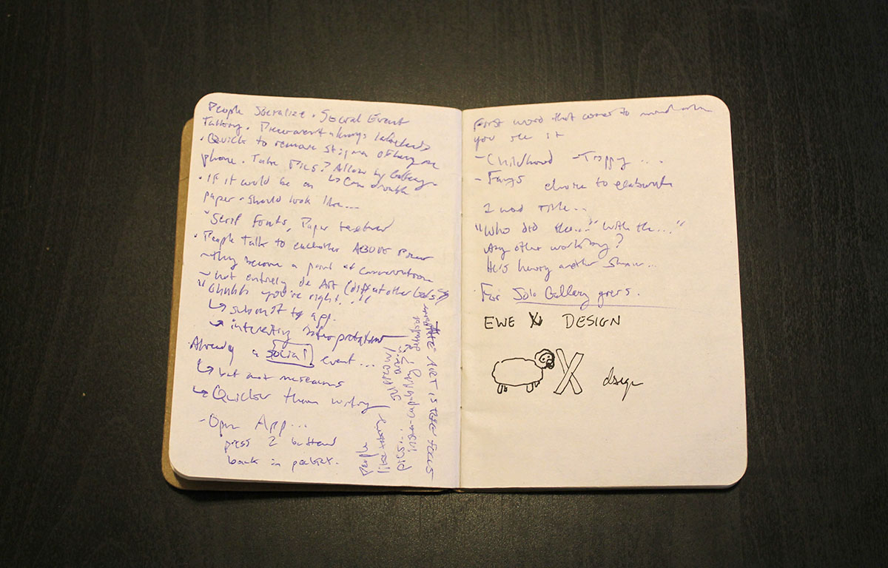
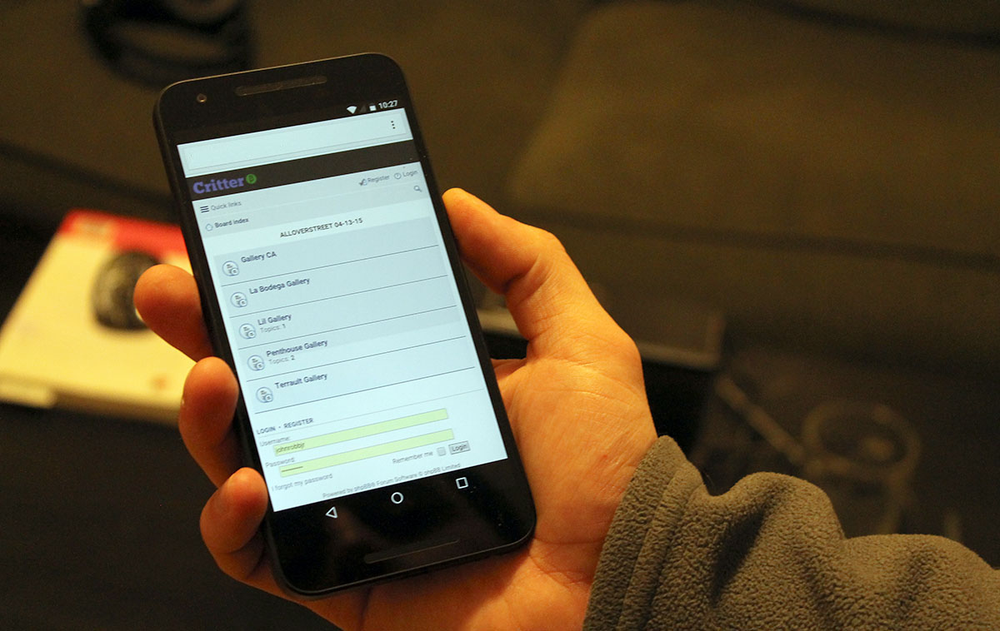
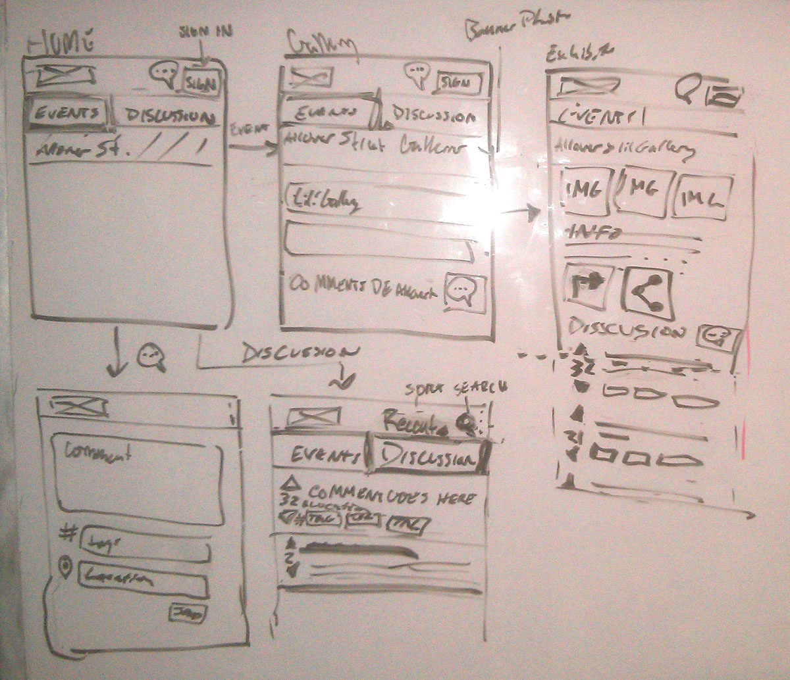
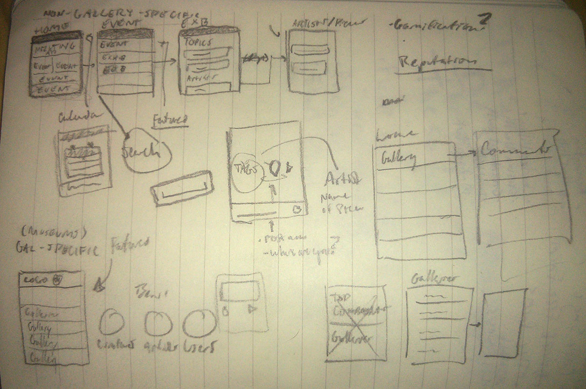
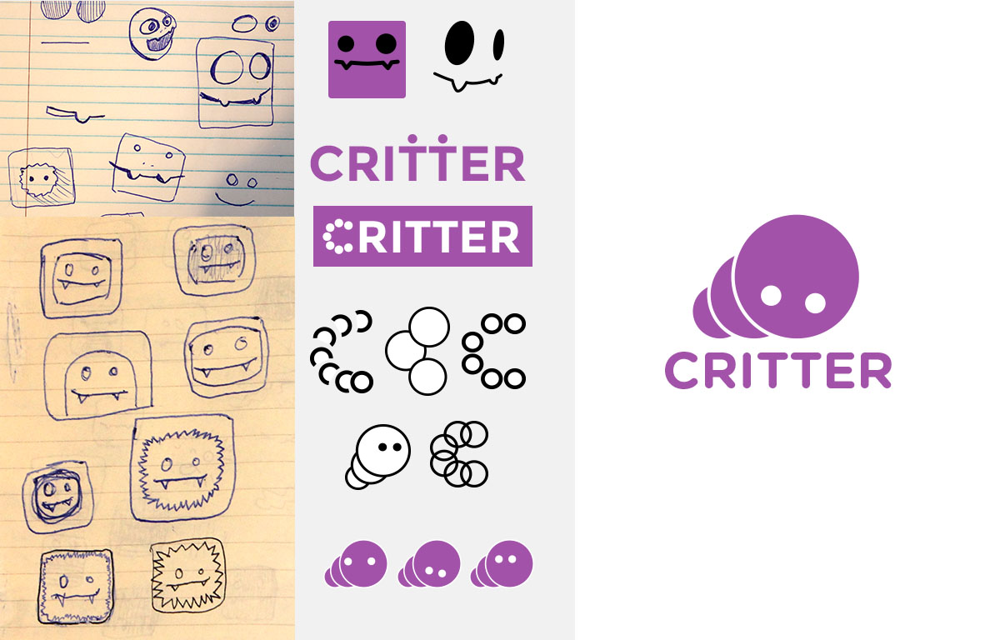
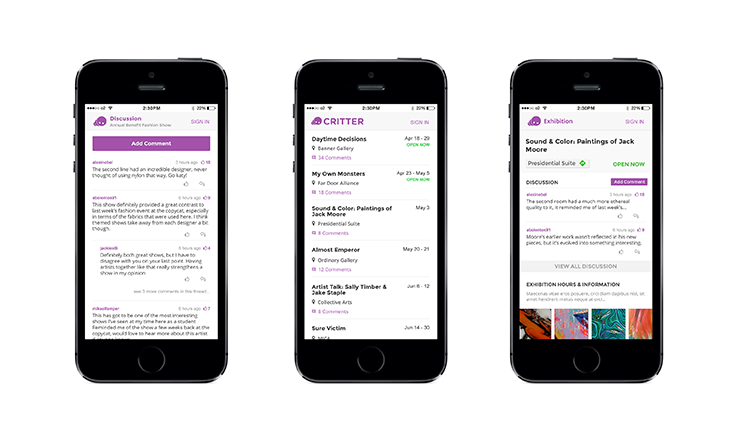

Challenge: How could we facilitate better conversation among the art community?
Company: Self
Role: UX UI Desginer
Contribution
User Flow
Wireframes
Desing and Development
Task Flow
Prototyping
Mockups
Branding
Tools Used
HTML and CSS
Bootstrap
Illustrator
Lucidchart
Whiteboard
Sketch
My friend Aravind had an idea. He knew that there were valuable conversations about art that occured during classes or casual discussions, but these conversations were more rare than they should be. How could we facilitate better conversation among the art community?
The idea was interesting, and eventually we built it out as a mobile web app structured as an events calendar with a focus on user comments.
Ultimately the app flopped, but with our fail-fast mentality going into it, we were able to take it as a learning experience without using unnecessary time
and resources.
Process
We went into the process with the desire of having an MVP, so we used quick and efficient techniques to have our product ready in time for
quick validation.
Prototyping
We started with an extremely low fidelity "prototype" to figure out the basic functionalities of the application. I went to a gallery event with a small
notebook, and wrote something down every time I felt compelled to use the app.

Prototype exercise
From this we gained valuable insights at when a person might use this during their gallery experience and how a person might interact with others while
using it.
Design & Development
First we tried to use an open-source forum software (phpBB) to develop the product, but it lacked the customization options necessary to create an easy-to-use web application.

Critter running on the clunky phpBB platform
We then called on our friend Venkatesh, a seasoned developer who agreed to jump on board the project. We then decided we’d build the mobile web app from scratch.
Venkatesh would handle the backend and databases (using Perl and SQL) while I would handle the front-end (HTML, CSS, and Twitter Bootstrap).
Aravind and I took to the whiteboard, and eventually came up with the app’s user flows and general layout.

Early whiteboard drawings

Initial sketches
For the logo we called up another friend with a strong visual design background, and iterated until we got to our fun little
"critter" (derived from the word "critique"):

Development of the Critter logo
I used the sketches to create hi-fi mockups which I would reference during the development phase.

HiFi Comps
Launch
We prepared our table outside of the Lory Studen Center with a purple tablecloth and matching balloons, as well as lollipops (as I said, low budget).
As people filtered in, we asked them if they wanted a lollipop, and gave a small pitch about what Critter was and how they could use it. We talked to
nearly 100 people, but a problem began to quickly emerge: many of the people we spoke to are not into art. This was not something we had considered while developing. A lot of people seemed interested in the idea, and we had 13 sign-ups by the end of the night.
Four hours later, we broke down for the night, and not a single comment had been posted. There could have been many reasons as to why this occurred, but after
much thought we decided the overwhelming disinterest was enough to discontinue the project.
What I Would Do Differently
Conducting more initial user research would have led to earlier invalidation of our original idea, which could have possibly lead to new similar concepts.
Our launch was not extremely well planned. Providing further motivation in some form for users to sign up and comment may have helped to drive usage.
Rather than treating the lack of interest as a failure, we could have looked into pivoting to find other places for growth.
What Went Well
We went into the project with a fail-fast mentality, and we were able to release an MVP. Even if it failed, we were successful in our
pursuit of learning.
I was able to hone my HTML and CSS skills by applying them to a tangible project.
Leading the full ideation-design-iteration-development process was incredibly interesting and I gained confidence to be able to go through a similar
process in the future.